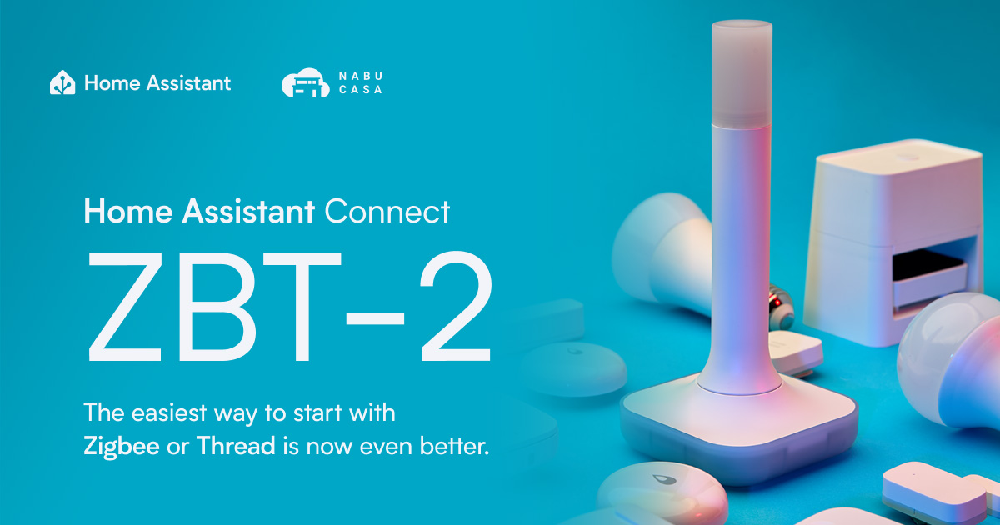

Guide · Matter & Thread
Home Assistant Connect ZBT-2 as a Thread border router
The Home Assistant Connect ZBT-2 is the official USB radio from Nabu Casa, and it is the easiest supported way to turn a Home Assistant box into a Thread border router. Plug it in, install the OpenThread Border Router add-on, and your Matter-over-Thread devices pair locally, with the credentials they need stored where you can see them. It is officially a Zigbee or Thread adapter — one protocol at a time — so if you already run a Zigbee network on a different stick, the ZBT-2 can sit beside it and do Thread duty only.
One thing to get out of the way first: the ZBT-2 is not a border router on its own. Per the Home Assistant Connect ZBT-2 product page, using it as a Thread border router separately from Home Assistant is not a built-in capability. It is a radio. The border router itself is software — Home Assistant's OpenThread Border Router (OTBR) add-on — which runs on your Home Assistant host and uses the ZBT-2 as its Thread radio. If you have been looking for a standalone Thread border router box or a drop-in replacement for a HomePod mini or Nest Hub that runs headless, this is not it. If you already run Home Assistant, it is a strong fit.

What the ZBT-2 is (and what changed from ZBT-1)
The ZBT-2 is the second generation of the Connect platform. It succeeds the Connect ZBT-1, the adapter formerly sold as SkyConnect, which is now discontinued. According to the product page, the hardware pairs a Silicon Labs MG24 main radio with an ESP32-S3 that serves as the USB-serial bridge. That chip upgrade from the ZBT-1's MG21 matters for two reasons: faster operation and better weak-signal sensitivity, which helps at the edges of a house where Thread networks tend to struggle.
The other spec jump is the serial link speed. The ZBT-2 talks over USB at 460,800 baud, four times the ZBT-1's 115,200. Home Assistant's claim is a fourfold improvement in adapter speed and device responsiveness — meaningful once you have a couple of dozen devices checking in. Power and data are a single USB-C connection at 5 V DC, 500 mA, and a 1.5 m cable comes in the box.
Physically, this is an antenna-and-base design rather than a bare dongle: an omnidirectional 24 mm antenna, 164 mm tall, with a peak gain of 4.16 dBi, on a polycarbonate base. Transmit power is rated at 10 dBm in Europe and 8 dBm elsewhere, indoor use only, 0–65 °C. All per the spec sheet.
Why a border router at all
Thread is the mesh protocol under Matter. Most battery-powered Matter devices — door and window sensors, motion sensors, remotes — are Thread devices, and Thread devices need at least one Thread border router on the network to connect Thread to the rest of your LAN. You may already own one without knowing: a HomePod mini, a Nest Hub, or a 4th-generation Echo all act as border routers. Those work, but they route your Thread network through a vendor's devices and vendor's app. Owning the border router in Home Assistant keeps the network local and under your control.
If you are still deciding whether Thread is worth the move, our walkthrough of building a Thread network with Home Assistant covers the whole journey, and the general Thread border router explainer lists every border router you may already own.
Setup: turning Home Assistant into the border router
- Flash and configure the ZBT-2 for Thread. The adapter supports Zigbee 3.0 or Thread — choose one. If this adapter is your Zigbee coordinator today, leave it as Zigbee and buy a second one for Thread.
- Install the OpenThread Border Router app on Home Assistant. The procedure is documented as "Enable Thread on Home Assistant Connect ZBT-2" in the Thread integration docs. Nabu Casa also runs a support section for ZBT-2 OTBR setup at support.nabucasa.com (it is behind a Cloudflare wall for automated fetches, but loads fine in a browser).
- Verify the network. Go to Settings, then Connectivity, then Thread. The Home Assistant network should appear under Preferred network. On a first setup, Home Assistant auto-creates a Thread network named something like ha-thread-xxxx.
- Onboard into an existing Thread network, if you have one. If your home already runs a Google or Apple Thread network, you can import its credentials instead of making a new one: use the Home Assistant Companion app to send credentials to Home Assistant, then make that network the preferred one.
Sharing Thread credentials before pairing devices
This is the step people skip, then wonder why Matter pairing fails. Before you add a Matter-over-Thread device, the Home Assistant Companion app on your phone needs your Thread credentials. Per the Thread integration docs: on Android, go to Settings, then Companion app, then Troubleshooting, and tap Sync Thread credentials. On iPhone, go to Settings, then Connectivity, then Thread, and send credentials to the phone.
After that, pairing a device is the standard Matter flow: scan the device's Matter QR code with the Home Assistant Companion app. The phone commissions the device over Bluetooth, and the device's working connection then rides over the Thread network. The ZBT-2 stays in the box doing radio duty the whole time.
One compatibility note from the product page: Matter devices that connect over Wi-Fi do not need the ZBT-2 at all — they join your LAN and Home Assistant talks to them over Matter directly. Thread matters mainly for battery-powered Matter devices that use Thread instead.
The mesh rule: routers carry the network, batteries ride it
When our editor Adam moved his Puerto Rico beach house from Wi-Fi and Alexa to Thread running on Home Assistant Green plus a ZBT-2, the biggest lesson was mesh structure. Battery-powered Thread devices are endpoints, not repeaters — they do not extend coverage. The mesh is built by mains-powered Thread Routers. In his build, written up at blog.beguelin.com, Inovelli White Series switches were the backbone, Eve switches also proved solid, and Onvis Thread smart plugs served as movable mesh extenders between rooms. Battery devices — IKEA MYGGBETT door and window sensors, MYGGSPRAY motion sensors, BILRESA remotes — were added last, once the router layer was in place. The network ended up at roughly 30 Thread devices.
Channel planning: Thread lives in Wi-Fi's leftovers
Thread and Wi-Fi share the 2.4 GHz band, and interference follows. Wi-Fi 2.4 GHz has only three non-overlapping 20 MHz channels (1, 6 and 11). Thread splits the same band into sixteen 2 MHz 802.15.4 channels, numbered 11 through 26. The practical move, per Adam's write-up: put Wi-Fi on 1, 6 and 11, and choose a Thread channel that sits in one of the gaps — Thread channel 15 or 20 are common choices. Two mitigating facts keep this from being as painful as it sounds: Thread can scan for a quiet channel at boot, and it can migrate channels later without breaking device associations. Concrete walls with rebar still block both technologies, so treat Thread coverage the way you treat Wi-Fi coverage: add routers, test, repeat.
The reset trap
The one genuinely painful gotcha in Adam's build: resetting the ZBT-2 from the Thread Border Router panel in Home Assistant can force re-adding all of your Thread devices. He did it early on, at around 30 devices, and had to redo every one. Avoid resets unless nothing else works, and if you must reset, do it before the network has grown. This is the failure mode that hurts most exactly when the network is done and happy.
Zigbee, migration, and what the ZBT-2 won't do
Three limitations worth knowing before buying, per the product page. First, no multiprotocol: the ZBT-2 cannot run Zigbee and Thread simultaneously, and Nabu Casa, having tested MultiPAN on the ZBT-1 and found it inconsistent, does not plan to implement it. Dedicate one adapter per protocol. Second, no standalone border router operation — the OTBR add-on on your Home Assistant host is the router. Third, no PoE version is planned (the experimental PoE firmware exists only for the ZWA-2, a different Connect product). On the upside: Zigbee 4.0 support is under review and believed possible via firmware update, and experimental repeater firmware exists — but a ZBT-2 flashed as a repeater cannot coordinate again until reflashed with stock firmware from the Open Home Foundation toolbox website.
Migration is the good news for anyone replacing an older stick. Home Assistant ships migration wizards for both Zigbee and Thread networks, and Nabu Casa documents using the ZBT-2 with Zigbee2MQTT, including how to migrate. Some adapter families — ConBee among them — need extra steps, so check the migration docs for your specific stick before starting.
Thinking of buying one as your Thread radio? Home Assistant Connect ZBT-2 on Amazon has current price and stock, and if you are building it around official hardware, our review of the Home Assistant Green covers the box it typically plugs into.
FAQ
Can the Connect ZBT-2 run Zigbee and Thread at the same time?
No. The ZBT-2 runs Zigbee 3.0 or Thread, but not both at once. Nabu Casa tested multiprotocol operation on the earlier ZBT-1, found it inconsistent, and does not plan to implement it. Dedicate one adapter to each protocol.
Can the ZBT-2 act as a Thread border router on its own, without Home Assistant?
No. Nabu Casa states that this capability is not built into Connect ZBT-2. The ZBT-2 is a radio; the border router is Home Assistant's OpenThread Border Router add-on running on the Home Assistant host, which uses the ZBT-2 as its radio.
How do I enable Thread on the ZBT-2 in Home Assistant?
Install the OpenThread Border Router app on your Home Assistant instance and follow the Enable Thread on Home Assistant Connect ZBT-2 procedure. Then confirm in Settings > Connectivity > Thread that the Home Assistant network is listed as the preferred network.
How do I add Matter-over-Thread devices?
First share Thread credentials from your Thread-border-router phone app to the Home Assistant Companion app (Sync Thread credentials on Android; send credentials to phone on iPhone), then scan the device's Matter QR code with the Companion app. The phone commissions over Bluetooth and the device joins over Thread.
Can I migrate my existing Zigbee or Thread network to the ZBT-2?
Yes. Home Assistant has migration wizards for both Zigbee and Thread networks, and Zigbee2MQTT documents migrating to the ZBT-2. Some third-party adapters, such as ConBee sticks, need extra steps.
Why did resetting my ZBT-2 wipe my Thread devices?
Resetting the ZBT-2 from Home Assistant's Thread Border Router panel can force every Thread device to be re-added. Reset only when nothing else works, and know the cost before you press it.
- Primary sources
- Home Assistant Connect ZBT-2 product page; Home Assistant Thread integration; Building a Thread network with Home Assistant (blog.beguelin.com); Nabu Casa support: ZBT-2 OTBR
As an Amazon Associate, HA News earns from qualifying purchases.